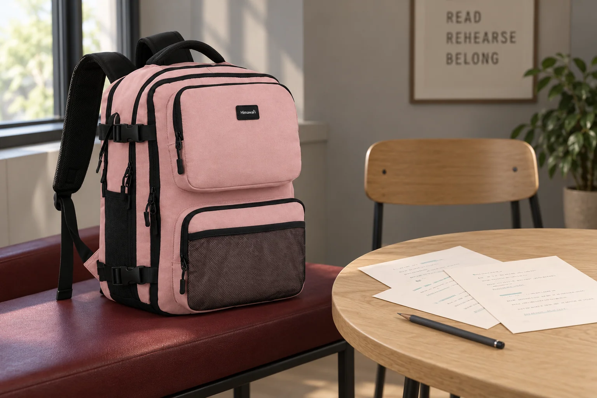
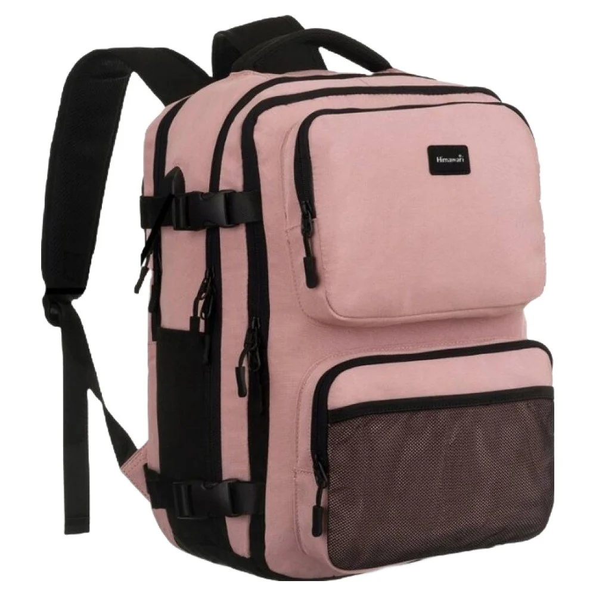

백팩을 세워 열까, 눕혀 열까

백팩을 바닥에 세워 열다가 안쪽을 더 보고 싶어 옆으로 눕히는 경우가 있습니다. 보이는 면은 넓어져도 세워 둔 물병과 여러 소품의 방향이 함께 바뀝니다. 가방을 여는 자세를 고를 때는 입구를 보는 편의와 내용물이 놓일 상태를 같이 생각해야 합니다. 가방이 끝까지 펼쳐지는 구조인지도 실제 제품에서 확인할 문제입니다.
처음에는 닫힌 가방을 어떤 면으로 두고 있는지 살펴봅니다. 바닥을 받치고 세워두는지, 등판을 아래로 놓는지, 앞면이 닿는지에 따라 접촉하는 부위가 달라집니다. 모양이 반듯해 보인다는 이유만으로 어느 면으로나 눕혀도 된다고 정하지 않습니다. 밖에 달린 장식과 실제 내용물을 포함해 눕혔을 때 무엇이 먼저 닿을지 봅니다.
세워 여는 백팩은 위에서 아래를 본다
세운 가방의 입구로 손을 넣으면 가까운 위쪽 물건부터 보입니다. 깊은 곳에 놓인 작은 파우치가 큰 파일 뒤에 가려지는지 확인할 수 있습니다. 입구가 보여도 손으로 잡을 여유가 부족하면 파일을 먼저 빼야 할 수 있습니다. 가방을 옆으로 돌리기 전에 자주 꺼낼 물건의 자리를 위쪽으로 바꾸는 방법이 있는지 살펴봅니다.
세운 상태를 유지하려고 한 손으로 손잡이를 잡고 있다면 다른 손으로 무엇을 할 수 있는지도 봅니다. 물건을 꺼낸 다음 둘 곳이 없으면 가방을 받친 손까지 바꾸어야 합니다. 본체가 혼자 서 있을 것이라고 기대하기보다 필요한 동안 안정적으로 받칠 위치를 찾습니다. 가방을 여는 동작과 물건을 사용할 준비를 한 자리에서 이어볼 수 있습니다.
Himawari No.2301 제품 정보의 핑크 원본 사진에는 앞쪽으로 도드라진 주머니들과 본체의 여밈 선이 보입니다. 닫힌 사선 모습은 가방을 어느 면으로 놓을지 생각하는 자료가 됩니다. 각 지퍼가 연결되는 내부와 완전히 열렸을 때의 모습은 이 사진만으로 알 수 없습니다. 열림 방향은 실제 안내와 열린 사진을 찾아 확인합니다.

눕히기 전에 방향을 유지할 물건을 보기
가방을 눕히면 세워 넣은 용기도 옆을 향할 수 있습니다. 용기의 닫힘과 허용된 운반 방향은 해당 물건의 안내를 따릅니다. 옆으로 놓을 수 없는 물건이 있다면 그 묶음을 먼저 꺼내거나 가방을 세운 채 사용하는 방법을 고릅니다. 입구가 더 잘 보인다는 한 가지 이유로 내용물의 조건을 바꾸지는 않습니다.
종이 파일이나 기기 케이스는 눕힌 뒤 다른 짐이 위에 놓이는지 살펴봅니다. 세워 있을 때 나란했던 두 물건이 방향을 바꾸면 겹쳐질 수 있습니다. 가방을 흔들어 내용물을 섞으며 원하는 모양을 만들기보다 내려놓은 상태에서 배치를 정리합니다. 케이스를 썼다는 사실만으로 위쪽의 압력을 괜찮다고 판단할 수는 없습니다.
앞주머니에 단단한 소품이 있다면 어느 면을 아래로 둘지도 달라집니다. 앞면을 받침에 대면 그 소품이 본체와 함께 눌릴 수 있습니다. 실제 가방의 돌출 부위와 관리 안내를 보고 닿는 면을 고릅니다. 필요한 경우 내용물을 덜어내고 가방을 다른 위치로 옮길 수 있습니다.
놓을 면은 본체보다 넓게 필요할 수 있다
세운 백팩이 들어가는 자리와 눕힌 백팩이 놓이는 자리는 다릅니다. No.2301의 안내된 외부 크기는 가로 28 × 세로 42 × 폭 17cm입니다. 어느 면을 아래로 둘지에 따라 받침에 닿는 바깥 규모가 달라집니다. 이 숫자는 열린 가방의 펼친 크기를 나타내지 않으므로 실제로 열림 방향을 확인하고 손이 움직일 공간을 더 봅니다.
책상에 눕혀 열 생각이라면 본체 전체가 받쳐지는지 확인합니다. 가방 일부가 모서리 밖으로 나와 있다면 지퍼를 당길 때 위치가 달라질 수 있습니다. 물건을 꺼내 놓을 면과 가방을 둘 면을 분리해 생각하면 필요한 책상 공간을 알기 쉽습니다. 가방을 넓게 열 수 있어도 옆 사람의 작업 면을 차지해야 한다면 다른 위치를 고를 수 있습니다.
바닥을 이용할 때는 장소에서 허용한 위치와 눈에 보이는 물기·오염부터 살핍니다. 어깨끈이 가방 아래에 겹쳐 눌려 있는지, 통로로 나와 있는지도 봅니다. 필요한 물건을 다룰 범위를 정하고 주변의 이동 공간을 남깁니다. 물건 하나를 꺼내고 닫을 일이라면 굳이 본체 방향을 크게 바꾸지 않는 쪽을 선택할 수 있습니다.
반복해서 여는 물건으로 두 자세 비교하기
가방을 바꾸려는 이유가 안쪽을 보기 어려워서라면 자주 쓰는 물건 하나로 비교해봅니다. 세운 상태에서 그 물건을 꺼낸 뒤 다시 넣고, 내용물에 맞는 경우에만 방향을 바꾸어 봅니다. 얼마나 크게 열었는지보다 다른 짐을 몇 번 옮겨야 했는지 기억합니다. 두 방식에서 꺼낼 순서가 같다면 가방을 눕히는 이점이 크지 않을 수도 있습니다.
물건이 잘 보이는 상태와 보관하기 좋은 상태도 다를 수 있습니다. 작업할 때 펼쳐둔 가방을 다시 세워 이동하려면 내용물을 제자리로 정리하고 여밈을 닫아야 합니다. 밖으로 나온 선이나 종이 끝이 없는지 봅니다. 본체를 세운 뒤에는 이동 중 쓰는 카드와 연락 도구가 다시 찾을 자리에 있는지 확인할 수 있습니다.
후보 제품에 물어볼 내용도 자세를 붙여 구체화할 수 있습니다. 세워 둔 상태에서 큰 파일을 꺼낼 수 있는지 보고 싶다거나, 어느 면으로 놓고 열도록 안내하는지 질문합니다. 열린 사진에서 보이지 않는 구조는 질문으로 남깁니다. 실제 내용물을 유지한 채 사용할 수 있는 자세를 찾으면 열린 모양의 인상과 자신의 사용 동작을 나누어 판단할 수 있습니다.